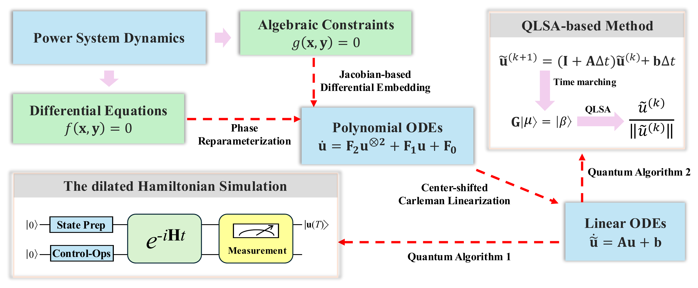
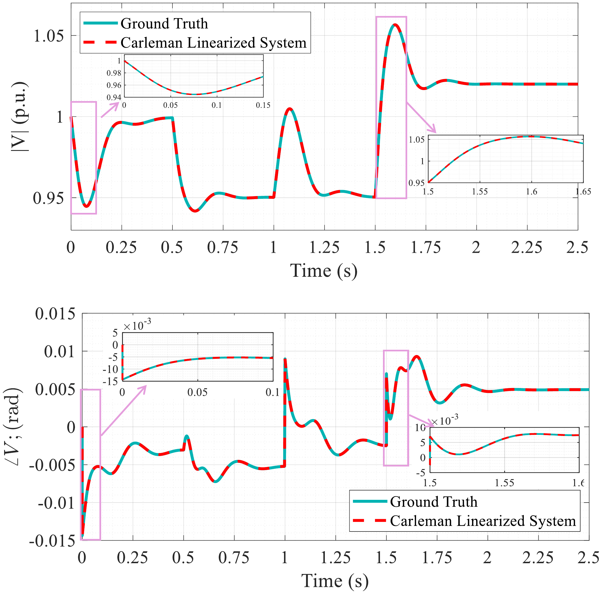
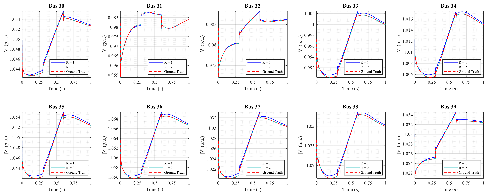
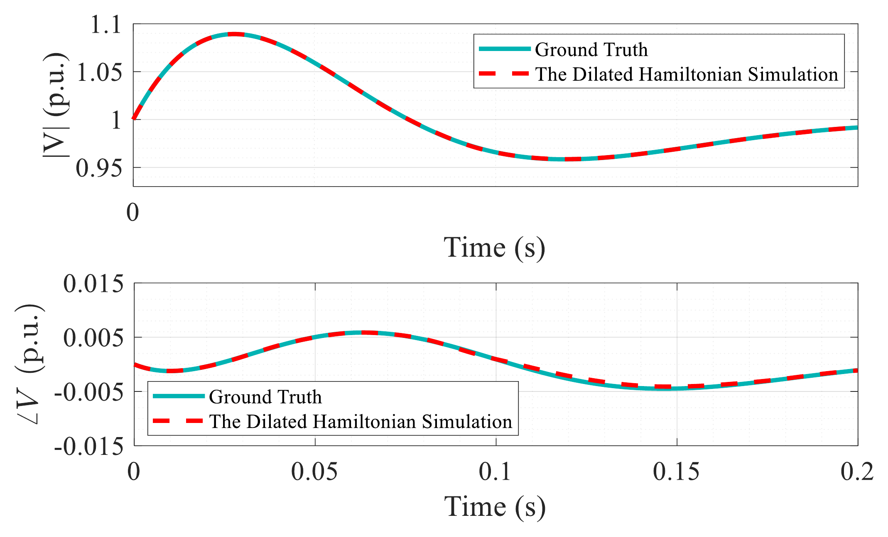

Project 6 — Quantum Computing for Power System Dynamic Simulation
Overview
This project develops a computational framework for transforming nonlinear power-system dynamic models into forms that are compatible with quantum algorithms.
The approach connects conventional differential-algebraic equation (DAE) models with polynomial reformulation, Carleman linearization, and quantum-compatible linear-system representations.
The goal is to explore how quantum algorithms may be applied to nonlinear power-system dynamic simulation while preserving the essential structure of the original physical model.
Motivation
Power-system dynamics are commonly described by nonlinear differential-algebraic equations,
\[ \dot{\mathbf{x}} = f(\mathbf{x},\mathbf{y}), \qquad \mathbf{0} = g(\mathbf{x},\mathbf{y}), \]
where \(\mathbf{x}\) represents dynamic states and \(\mathbf{y}\) represents algebraic network variables.
Many quantum algorithms are naturally formulated for linear systems or linear evolution. This creates a representation gap between conventional nonlinear power-system models and quantum computational primitives.
This project investigates a systematic way to bridge that gap.
Framework

The main transformation can be summarized as
\[ \boxed{ \text{DAEs} \rightarrow \text{ODEs} \rightarrow \text{Polynomial ODEs} \rightarrow \text{Carleman Linear System} \rightarrow \text{Quantum Solver} } \]
Rather than replacing the original physical model, the framework constructs a lifted representation that can interface with quantum linear-algebra and dynamic-simulation methods.
DAE Reformulation
The first step converts the coupled differential-algebraic model into a unified dynamical representation.
A Jacobian-based reformulation is used to describe the evolution of algebraic variables together with the original differential states. This provides an ODE-compatible form while retaining the coupling between device dynamics and the network equations.
At this stage, the objective is not to simplify the physical system aggressively, but to obtain a representation that can be systematically transformed in later steps.
Polynomial Reformulation
Power-system models contain nonpolynomial terms arising from controller dynamics, coordinate transformations, and electrical quantities.
To make the system compatible with Carleman linearization, selected nonlinear terms are reformulated using additional state variables and local polynomial approximations.
For example, trigonometric phase variables can be represented through auxiliary sine and cosine states. This allows important nonlinear structure to be retained without repeatedly expanding trigonometric functions around a single operating point.
The resulting model can be written generically as
\[ \dot{\mathbf{u}} = \mathbf{F}_0 + \mathbf{F}_1\mathbf{u} + \mathbf{F}_2\mathbf{u}^{\otimes 2} +\cdots. \]
Carleman Linearization
Carleman linearization introduces higher-order combinations of the original state variables and embeds the polynomial dynamics into a larger linear system.
A lifted state has the general form
\[ \widetilde{\mathbf{u}} = \left[ \mathbf{u}, \mathbf{u}^{\otimes 2}, \ldots \right]^{\mathsf T}, \]
leading to a truncated linear approximation
\[ \dot{\widetilde{\mathbf{u}}} = \mathbf{A}\widetilde{\mathbf{u}} + \mathbf{b}. \]
A center-shifting strategy is used to improve the practical behavior of the truncated representation around the operating region of interest.
This lifted linear model forms the main interface between the nonlinear power-system dynamics and quantum algorithms.
Quantum-Solver Interfaces
The project considers two complementary ways to use the lifted linear representation.
Hamiltonian-Based Dynamic Simulation
The first approach reformulates the generally non-Hermitian linear dynamics into an enlarged Hermitian representation. This makes it possible to study the system using Hamiltonian-simulation techniques.
The purpose of this formulation is to establish a quantum-compatible representation of the dynamics rather than to claim an immediate hardware advantage.
Quantum Linear-System Formulation
A second approach discretizes the lifted dynamics in time and collects the trajectory into a structured linear system.
This provides a conceptual pathway for applying quantum linear-system algorithms to time-domain simulation.
Together, the two approaches illustrate how the same transformed power-system model can connect to different classes of quantum algorithms.
Validation
The framework is evaluated on representative inverter-based power-system test cases of different sizes.
The main validation compares trajectories from the transformed linear model with those obtained from the original nonlinear dynamics.

The results show close agreement across the tested operating conditions, indicating that relatively low-order lifted models can capture the dominant dynamic behavior in the studied cases.
A larger benchmark system is also used to evaluate whether the same modeling pipeline remains applicable as system size increases.

These studies are intended to validate the modeling framework and its quantum-compatible formulation rather than demonstrate practical quantum speedup.
Quantum Dynamic-Simulation Demonstration
A reduced proof-of-concept example is used to examine the Hamiltonian-based formulation.

The numerical demonstration shows that the transformed representation can reproduce the main system trajectories over the simulated time horizon.
This provides an initial validation of the connection between nonlinear power-system dynamics, Carleman linearization, and quantum dynamic-simulation methods.
Main Contributions
Developed a systematic transformation pipeline from nonlinear power-system DAEs to quantum-compatible linear representations.
Introduced a Jacobian-based reformulation for incorporating algebraic network variables into a unified dynamical model.
Used state reparameterization and polynomial modeling to prepare nonlinear dynamics for Carleman lifting.
Applied center-shifted Carleman linearization to construct a structured finite-dimensional linear approximation.
Connected the transformed model to both Hamiltonian-based simulation and quantum linear-system formulations.
Validated the framework on representative power-system test cases and demonstrated close agreement with conventional nonlinear simulation.